脊髓全长42–45cm，位于椎管内，上端在枕骨大孔处续于延髓，下端止于L1椎体下缘（成人）。它就像一个「双向八车道高速公路」：上行车道传递感觉信号到脑，下行车道传递运动指令到肌肉。此外，灰质前角是运动神经元的「调度中心」，侧角是自主神经的「控制室」。
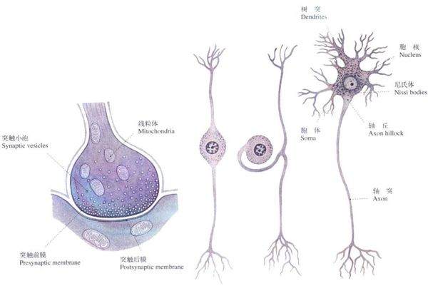
两个关键数据：颈膨大（C5–T1）发出臂丛支配上肢，直径13–14mm；腰骶膨大（L1–S3）发出腰骶丛支配下肢。脊髓末端变细为脊髓圆锥→终丝→尾骨。L1以下椎管内只有神经根（马尾），所以腰穿选L3–L4间隙不会刺伤脊髓。
胚胎期脊柱比脊髓长得快，导致成人脊髓节段比对应椎骨「上移」了。这是脊柱MRI定位病变节段的基础。
| 脊髓节段 | 对应椎骨 | 口诀 |
|---|---|---|
| C1–C4 | 同序数椎骨 | 上颈段不偏移 |
| C5–T4 | 同序数椎骨 − 1 | 减一 |
| T5–T8 | 同序数椎骨 − 2 | 减二 |
| T9–T12 | 同序数椎骨 − 3 | 减三 |
| L1–L5 | T10–T12椎骨水平 | 腰髓在胸椎 |
| S1–S5 | T12–L1椎骨水平 | 骶髓在胸腰交界 |
脊柱是「电梯井」（骨头隧道），脊髓是里面的「电梯」。但电梯只升到10楼（L1），以上楼层靠「电缆」（神经根）继续传信号——越下方的电缆拖得越长：颈段基本横向出孔，胸5–8拖2个椎体，胸9–12拖3个椎体，腰骶神经根要「长途跋涉」才能从对应的椎间孔出去，这些拖下来的神经根就是马尾。
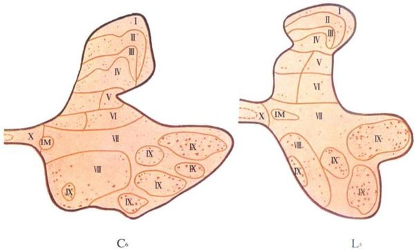
瑞典神经学家Rexed将脊髓灰质分为10层（I–X），这是现代神经病理学的标准描述语言：
| 板层 | 位置 | 功能 | 病变对应 |
|---|---|---|---|
| I–IV | 后角头部 | 痛温觉初级中继（胶状质=II层） | 带状疱疹后神经痛（I层） |
| V–VI | 后角基底部 | 机械感受+本体感觉中继 | 后角综合征 |
| VII | 中间带 | 含侧角（T1–L2交感，S2–S4副交感） | Horner综合征（T1侧角）；膀胱直肠障碍（S2–S4） |
| VIII–IX | 前角 | α运动神经元（IX层）+ γ运动神经元 | 下运动神经元瘫（ALS/脊髓灰质炎） |
| X | 中央管周围 | 中央灰质 | 脊髓空洞症早期（分离性感觉障碍起于此） |
表现：损伤平面以下双侧上运动神经元瘫+双侧全部感觉丧失+括约肌障碍。
病因：外伤（骨折脱位）、急性脊髓炎、转移瘤。
定位关键：感觉障碍平面上界=脊髓病变上界。
核心三联征：①同侧损伤平面以下上运动神经元瘫（皮质脊髓侧束）②同侧深感觉障碍（后索）③对侧损伤平面以下1–2节段起痛温觉丧失（脊髓丘脑束）。
解剖逻辑：后索纤维尚未交叉→同侧深感觉障碍；脊髓丘脑束已在白质前连合交叉→对侧痛温觉障碍；皮质脊髓侧束已在延髓锥体交叉→同侧瘫。
病因：髓外肿瘤（神经鞘瘤）、刀刺伤、多发性硬化。
表现：双侧对称性下运动神经元瘫（肌萎缩+肌束颤动），感觉正常。
病因：脊髓灰质炎、脊肌萎缩症（SMA）、ALS早期。
表现：同侧深感觉障碍+感觉性共济失调（闭目难立征阳性），运动正常。
病因：亚急性联合变性（VitB12缺乏→后索+侧索脱髓鞘）、脊髓痨（晚期梅毒）、多发性硬化。
解剖依据：病变从中央管开始→先破坏白质前连合（脊髓丘脑束交叉纤维）→双侧痛温觉丧失，但触觉和深感觉保留（后索和后角其他纤维不经过此处）。
表现：双侧对称性「分离性感觉障碍」→痛温觉丧失、触觉保留。可伴「马鞍回避」（骶部感觉保留，因骶部纤维在后索最外侧）。
病因：脊髓空洞症（常伴Chiari畸形）、髓内肿瘤早期。
| 特征 | 髓内病变 | 髓外硬膜内 | 硬膜外 |
|---|---|---|---|
| 根痛 | 少见 | 早且剧烈（根性痛） | 局部背痛 |
| 感觉障碍发展 | 下行性（从病变节段向下） | 上行性（从足向上） | 不定 |
| 感觉障碍类型 | 分离性（痛温觉先丧失） | 传导束性（全面性） | 传导束性 |
| 括约肌障碍 | 早且严重 | 较晚 | 不定 |
| CSF蛋白 | 增加不明显 | 明显增高（蛋白-细胞分离） | 增高 |
| 常见病因 | 室管膜瘤、星形细胞瘤、空洞症 | 神经鞘瘤、脊膜瘤 | 转移瘤、椎间盘突出 |
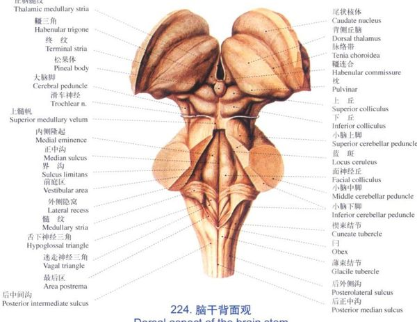
脑干有三大特征：①体积小但功能密度极高——所有上下行传导束必经之路，12对脑神经中10对的核团在此；②网状结构含上行网状激活系统（ARAS），维持意识清醒；③病变产生交叉性瘫痪——同侧脑神经损害+对侧肢体瘫，这是区别于大脑半球病变的「定位标志」。
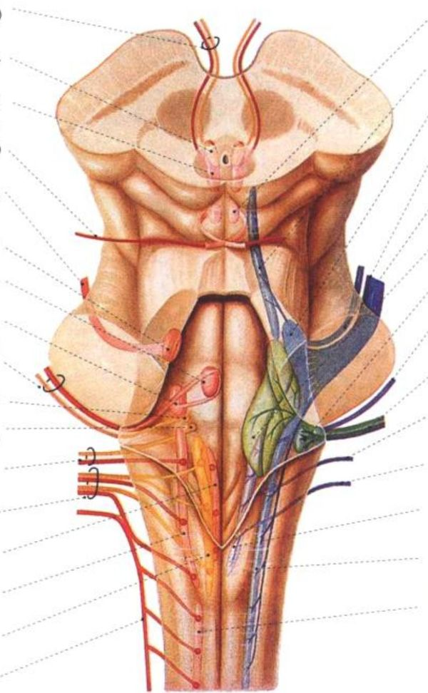
Rule of 4s是脑干定位的核心框架：以中线为原点，向外4mm画一条纵线。4mm以内的结构由旁正中动脉供血→受损=内侧综合征；4mm以外的结构由环周动脉供血→受损=外侧综合征。
| 中线4mm内（4M·内侧综合征） | 4mm外（4S·外侧综合征） |
|---|---|
| Motor tract（皮质脊髓束）→对侧偏瘫 | Spinothalamic tract→对侧痛温觉障碍 |
| Medial lemniscus→对侧深感觉障碍 | Sensory nucleus of V→同侧面部感觉障碍 |
| MLF（内侧纵束）→眼肌运动异常 | Sympathetic pathway→同侧Horner综合征 |
| Motor CN核（Ⅲ/Ⅳ/Ⅵ/Ⅻ）→同侧脑神经瘫 | Spino-cerebellar tract→同侧共济失调 |
把脑干想象成地铁换乘站：内侧月台（中线4mm内）走「运动快线」（皮质脊髓束）和「深感觉线」（内侧丘系）——月台被炸=对侧运动+深感觉障碍+同侧脑神经核受损。外侧月台（4mm外）走「浅感觉慢线」（脊髓丘脑束）和「小脑环线」——月台被炸=对侧浅感觉障碍+同侧共济失调+Horner。
一句话：血管决定症候群——旁正中动脉=内侧=4M，环周动脉=外侧=4S。
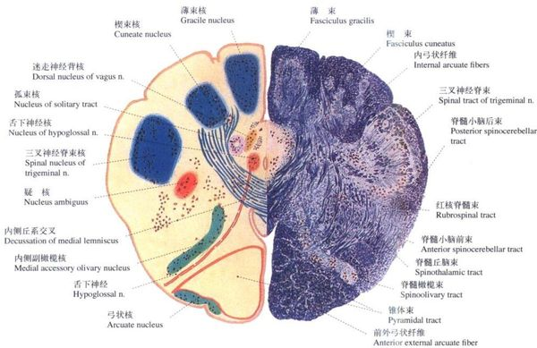
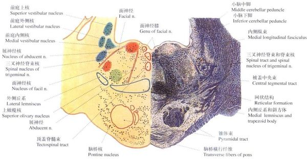
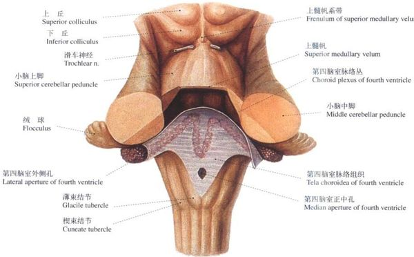
| 综合征 | 责任血管 | 病变断面 | 核心症状 | 记忆口诀 |
|---|---|---|---|---|
| Wallenberg （延髓背外侧） |
PICA | 延髓上部外侧 | 同侧面痛温觉丧失+吞咽困难+Horner+眩晕+同侧共济失调 | PICA外侧Wallenberg——面痛吞咽Horner晕 |
| Dejerine （延髓内侧） |
ASA | 延髓上部内侧 | 同侧舌瘫+对侧偏瘫+对侧深感觉障碍 | ASA内侧Dejerine——舌瘫偏瘫深感觉 |
| Millard-Gubler （脑桥基底外侧） |
AICA | 脑桥下部 | 同侧展神经瘫+面神经瘫+对侧偏瘫 | 脑桥外侧Millard——展面瘫+偏瘫 |
| Raymond-Cestan （脑桥被盖） |
AICA/SCA | 脑桥上部被盖 | 同侧共济失调+对侧所有感觉障碍 | 脑桥被盖Raymond——共济+对侧全感觉 |
| Weber （中脑腹侧） |
PCA穿支 | 中脑大脑脚 | 同侧动眼神经瘫+对侧偏瘫 | 中脑腹侧Weber——动眼瘫+偏瘫 |
| Benedikt （中脑被盖） |
PCA穿支 | 中脑被盖 | 同侧动眼神经瘫+对侧不自主运动 | Benedikt=Weber加震颤 |
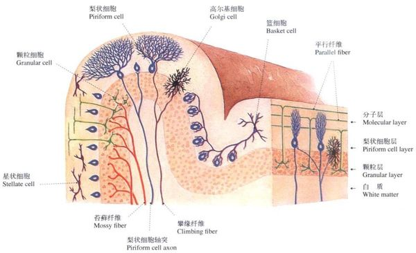
小脑不接受意识支配，但负责协调随意运动、维持平衡、调节肌张力。小脑病变=同侧共济失调（因为小脑传出纤维双重交叉→最终支配同侧）。
| 分部 | 别名 | 主要传入 | 主要传出 | 功能 | 病变表现 |
|---|---|---|---|---|---|
| 绒球小结叶 | 古小脑 | 前庭神经→前庭核 | 前庭脊髓束 | 维持平衡+协调眼动 | 躯干共济失调（Romberg+） |
| 前叶+蚓部 | 旧小脑 | 脊髓小脑束 | 网状脊髓束 | 调节肌张力 | 肌张力低下 |
| 后叶外侧部 | 新小脑 | 皮质脑桥小脑束 | 齿状核→丘脑→皮质 | 协调随意运动 | 意向性震颤+辨距不良+轮替障碍 |
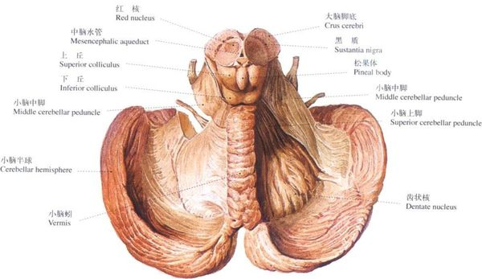
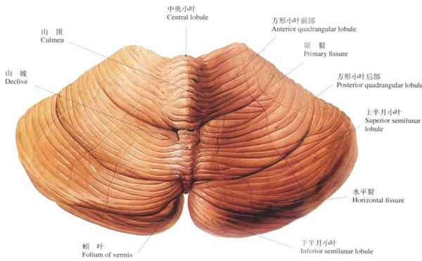
核心三征：①自发性剧痛（病灶对侧半身持续性烧灼样痛）②感觉过敏（轻触诱发剧痛）③偏身共济失调（深感觉传入受损）。可伴轻偏瘫（内囊后肢受压）。责任核团：丘脑腹后外侧核（VPL）+ 腹后内侧核（VPM）。
下丘脑重量仅4g，却调控着最基本的生存功能：①体温（视前区散热/后部产热）②摄食（外侧区摄食中枢/腹内侧核饱中枢）③水代谢（视上核/室旁核→ADH→尿崩症）④睡眠-觉醒（结节乳头体核→组胺能觉醒系统）⑤内分泌（GnRH→性腺轴/TRH→甲状腺轴/CRH→肾上腺轴）⑥自主神经（后部交感/前部副交感）。病变可致：尿崩症、体温调节障碍、摄食异常（肥胖/恶病质）、发作性睡病、性早熟、应激性溃疡。
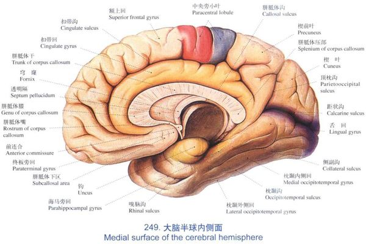
| BA区 | 位置 | 功能 | 病变表现 |
|---|---|---|---|
| BA4 | 中央前回 | 初级运动皮层（执行随意运动） | 对侧单瘫（Jacksonian march） |
| BA3,1,2 | 中央后回 | 初级躯体感觉皮层 | 对侧偏身感觉障碍 |
| BA6 | 额上回后部 | 运动前区（运动规划） | 失用 |
| BA8 | 额中回后部 | 额叶眼区（协同凝视） | 双眼向病灶侧凝视 |
| BA44,45 | 额下回后部（优势半球） | Broca区→运动性语言 | Broca失语（表达障碍） |
| BA22 | 颞上回后部（优势半球） | Wernicke区→感觉性语言 | Wernicke失语（理解障碍） |
| BA39 | 角回（优势半球） | 多模态整合（读写算+左右） | Gerstmann综合征 |
| BA17 | 距状裂两侧（枕叶） | 初级视皮层 | 对侧同向偏盲（黄斑回避） |
| BA41,42 | 颞横回（Heschl回） | 初级听皮层 | 双侧听力下降（单侧病变不明显） |
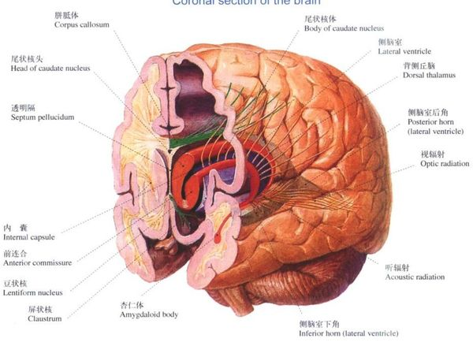
内囊是大脑皮层与皮层下结构之间所有投射纤维的必经之路。位置深、纤维密集、血供来自MCA的豆纹动脉（易出血/梗死）。「三偏综合征」是内囊后肢完全损害的经典表现：
| 「偏」 | 受损传导束 | 位置 |
|---|---|---|
| 偏瘫（对侧） | 皮质脊髓束 | 内囊后肢前2/3 |
| 偏身感觉障碍（对侧） | 丘脑皮质束 | 内囊后肢后1/3 |
| 偏盲（对侧同向性） | 视辐射 | 内囊豆状核后部 |
失语症的诊断需要评估三个维度：流利性（说）→理解（听）→复述。这是临床上的三步骤鉴别法：先看说话是否流利→再看能不能听懂→最后测能不能重复你的话。
| 失语类型 | 流利性 | 理解 | 复述 | 病变定位 | 常见病因 |
|---|---|---|---|---|---|
| Broca | ↓ 非流利 | ✓ 好 | ↓ 差 | 额下回后部BA44/45 | MCA上干闭塞 |
| Wernicke | ↑ 流利但无意义 | ↓ 差 | ↓ 差 | 颞上回后部BA22 | MCA下干闭塞 |
| 传导性 | ↑ 流利 | ✓ 好 | ↓ 差（核心特征） | 弓状束（连接Broca-Wernicke） | MCA下干（缘上回） |
| 经皮质运动性 | ↓ 非流利 | ✓ 好 | ✓ 好（核心特征） | Broca区前上方（额叶） | ACA-MCA分水岭 |
| 经皮质感觉性 | ↑ 流利 | ↓ 差 | ✓ 好（核心特征） | Wernicke区后方（颞顶交界） | MCA-PCA分水岭 |
| 完全性（Global） | ↓ 非流利 | ↓ 差 | ↓ 差 | MCA全干→整个外侧裂周围 | MCA主干闭塞 |
| 命名性 | ↑ 流利 | ✓ 好 | ✓ 好 | 颞中下回后部BA37 | 任何累及颞叶的病变 |
第一步（流利性）：说话费力、电报式=非流利（Broca/经皮质运动性/完全性）vs 说话流畅但无意义=流利（Wernicke/经皮质感觉性/传导性/命名性）。
第二步（理解）：听不懂=Wernicke/经皮质感觉性/完全性 vs 能听懂=Broca/传导性/经皮质运动性/命名性。
第三步（复述）：复述好但其他差=经皮质型（前/后），复述差=Broca/Wernicke/传导性，复述是唯一障碍=传导性。
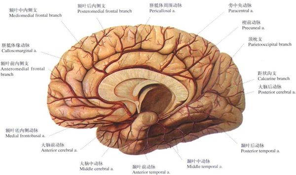
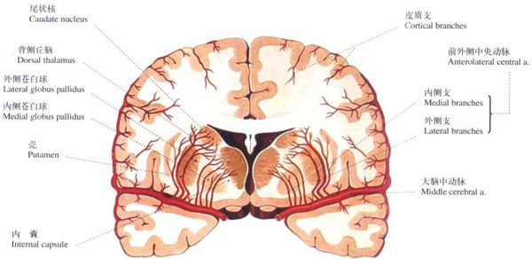
Willis环是脑底部的动脉吻合环，正常情况下两侧压力平衡、血流不混合。在主要动脉狭窄/闭塞时可提供侧支代偿。但只有约50%的人拥有完整的Willis环——断层解剖学上最常见的变异是fetal PCA（后交通动脉>PCA P1段），此时枕叶完全依赖颈内动脉供血。
| 动脉 | 供血区 | 皮层支闭塞 | 深穿支闭塞 | 关键鉴别 |
|---|---|---|---|---|
| MCA | 大脑外侧面（额顶颞）+ 基底节 | 对侧面臂为主偏瘫+偏身感觉障碍+优势半球失语 | 内囊型均等性偏瘫（豆纹动脉→内囊后肢） | 皮层支=面臂重，深穿支=上下均等 |
| ACA | 半球内侧面（旁中央小叶+额极+胼胝体） | 对侧下肢瘫+尿失禁+人格改变 | 罕见（Heubner回返动脉→内囊前肢+尾状核头） | 下肢>上肢=ACA，面部+上肢>下肢=MCA |
| PCA | 枕叶+颞叶下部+丘脑+中脑 | 对侧同向偏盲（黄斑回避）+失读不伴失写 | 丘脑综合征（Dejerine-Roussy） | 黄斑回避=PCA特征（双侧枕叶接受黄斑纤维） |
分水岭区=两条动脉供血区交界处，血压下降时最早缺血。①ACA-MCA分水岭=额顶交界→上肢近端无力（「桶人综合征」）②MCA-PCA分水岭=颞顶枕交界→经皮质感觉性失语/Gerstmann样症状③深部分水岭=脑室周围白质→纯运动性轻偏瘫。
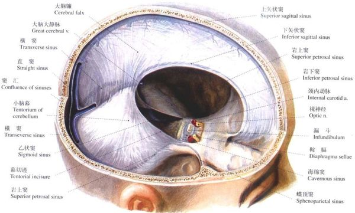
| 层次 | 特征 | 形成的结构 | 临床意义 |
|---|---|---|---|
| 硬脑膜 | 厚而坚韧，双层（外层=颅骨内骨膜） | 大脑镰、小脑幕、硬膜窦（矢状窦/横窦/乙状窦） | 硬膜外血肿（脑膜中动脉破裂）、硬膜下血肿（桥静脉撕裂） |
| 蛛网膜 | 半透明薄膜，无血管 | 蛛网膜粒（CSF吸收部位）、蛛网膜下腔 | 蛛网膜下腔出血（动脉瘤破裂→剧烈头痛） |
| 软脑膜 | 薄而富含血管，紧贴脑表面 | 随沟回深入脑实质、脉络丛（CSF分泌） | 脑膜炎（软脑膜炎症→颈强直） |
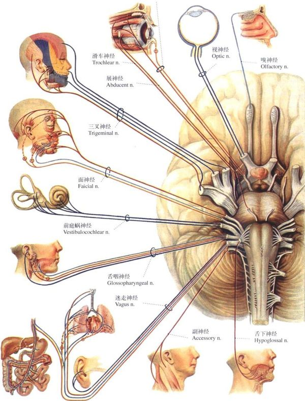
成人CSF总量约140mL，每日产生约450–500mL（每6–8小时完全更新一次）。脉络丛是主要分泌部位（2/3），其余来自脑实质间质液。循环动力来自：①新分泌的CSF推动②动脉搏动③体位变化。吸收主要经蛛网膜粒→上矢状窦→颈内静脉。
交通性脑积水（阻塞在第四脑室出口之后）→蛛网膜下腔出血、脑膜炎粘连→CSF吸收障碍→脑室系统全部扩大。
非交通性脑积水（阻塞在脑室系统内）→中脑水管狭窄/肿瘤→侧脑室+第三脑室扩大，第四脑室正常。
正常压力性脑积水（NPH）→三联征：步态障碍+认知下降+尿失禁（「Wet, Wacky, Wobbly」）。
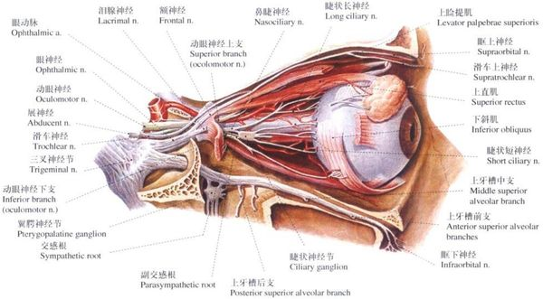
| # | 名称 | 核团 | 出颅 | 功能 | 病变体征 |
|---|---|---|---|---|---|
| Ⅰ | 嗅神经 | 端脑嗅球 | 筛孔 | 嗅觉 | 嗅觉丧失 |
| Ⅱ | 视神经 | 间脑→枕叶 | 视神经管 | 视觉 | 偏盲/盲 |
| Ⅲ | 动眼神经 | 中脑上丘 | 眶上裂 | 眼球运动+瞳孔 | 上睑下垂+瞳孔散大+眼外斜 |
| Ⅳ | 滑车神经 | 中脑下丘 | 眶上裂（背面穿出） | 上斜肌 | 下楼困难（向下向内复视） |
| Ⅴ | 三叉神经 | 脑桥 | V1眶上裂/V2圆孔/V3卵圆孔 | 面部感觉+咀嚼 | 角膜反射消失+咬肌萎缩 |
| Ⅵ | 展神经 | 脑桥面神经丘 | 眶上裂 | 外直肌 | 内斜视→颅高压假性定位体征 |
| Ⅶ | 面神经 | 脑桥 | 内耳门→茎乳孔 | 面部表情+味觉 | 周围性：额纹消失 vs 中枢性：额纹保留 |
| Ⅷ | 前庭蜗神经 | 脑桥延髓交界 | 内耳门 | 听觉+平衡 | 眩晕+耳聋+眼震 |
| Ⅸ | 舌咽神经 | 延髓 | 颈静脉孔 | 咽部感觉+吞咽 | 咽反射消失 |
| Ⅹ | 迷走神经 | 延髓 | 颈静脉孔 | 内脏+声带 | 声音嘶哑+吞咽困难 |
| Ⅺ | 副神经 | 延髓+脊髓C1–C5 | 颈静脉孔 | 斜方肌+胸锁乳突肌 | 转颈耸肩无力 |
| Ⅻ | 舌下神经 | 延髓 | 舌下神经管 | 舌肌运动 | 伸舌偏向患侧 |
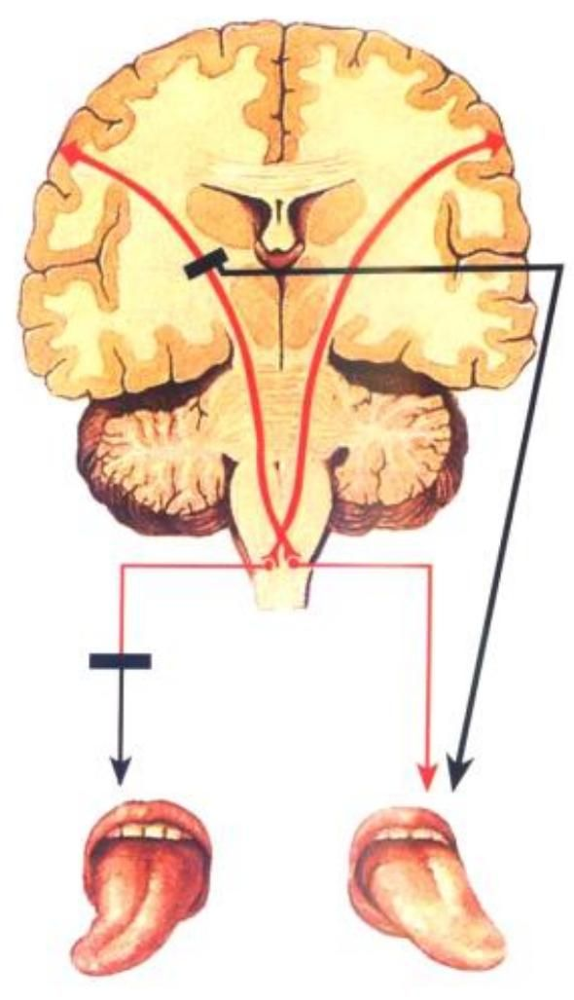
面神经核上半核（管理额肌+眼轮匝肌）=双电源供电——左右大脑两侧都给它供电，一边断了另一边顶上来→中风患者仍能抬眉闭眼（额纹保留）。下半核（管理口周表情肌）=单电源供电——只接对侧大脑来电，一边断电立刻罢工→口角歪斜。这就是「看额纹定中枢vs周围」的解剖学道理。
| 中枢性面瘫（核上瘫） | 周围性面瘫（核下瘫） | |
|---|---|---|
| 病变 | 对侧皮层/内囊膝部 | 面神经核/面神经本身 |
| 额纹 | 保留（可抬眉） | 消失 |
| 闭眼 | 可闭合 | 不能闭合 |
| 下面部 | 瘫痪（口角歪斜） | 瘫痪 |
| 伴随 | 常伴对侧偏瘫 | 可伴味觉/听觉过敏 |
| 病因 | 脑卒中 | 贝尔面瘫/脑桥病变 |
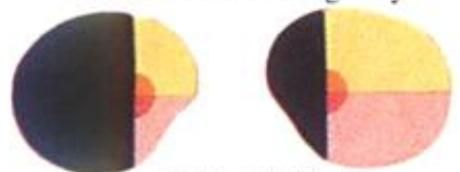
想象你开车从身体右侧去大脑：【痛温觉高速（脊髓丘脑束）】刚上高速的第一个服务区（脊髓后角）就过立交桥到对侧，之后一直在对侧开到终点；【深感觉高速（后索→内侧丘系）】一直走在本侧，直到快进城（延髓薄束核/楔束核）才过桥到对侧。这就解释了Brown-Séquard的「分裂」模式：半切脊髓时，深感觉的车还没过桥就被堵了（同侧深感觉障碍），但痛温觉的车在车祸平面以下已经过桥了、在对侧正常开着——可它经过车祸位置时也被堵了（对侧痛温觉障碍）。同一位置的车祸，堵的是不同的车。
| 感觉通路 | 一级神经元 | 二级神经元（交叉位置） | 三级神经元 | 皮层投射 |
|---|---|---|---|---|
| 痛温觉（脊髓丘脑侧束） | 后根神经节 | 后角固有核→前白连合（脊髓内） | 丘脑VPL | 中央后回BA3,1,2 |
| 粗略触觉（脊髓丘脑前束） | 后根神经节 | 后角→前白连合（脊髓内） | 丘脑VPL | 中央后回 |
| 深感觉（薄束/楔束→内侧丘系） | 后根神经节 | 薄束核/楔束核→丘系交叉（延髓） | 丘脑VPL | 中央后回 |
| 面部浅感觉（三叉丘系） | 三叉神经节 | 三叉神经脊束核/感觉主核→交叉（脑桥） | 丘脑VPM | 中央后回下部 |
| 视觉 | 视网膜双极细胞 | 节细胞→视交叉（仅鼻侧交叉） | 外侧膝状体 | 距状裂BA17 |
| 听觉 | 螺旋神经节 | 蜗神经核→斜方体交叉（脑桥） | 下丘→内侧膝状体 | 颞横回BA41,42 |
| 平衡觉 | 前庭神经节 | 前庭核→部分交叉 | 丘脑VPL/VPM | 中央后回+颞叶 |
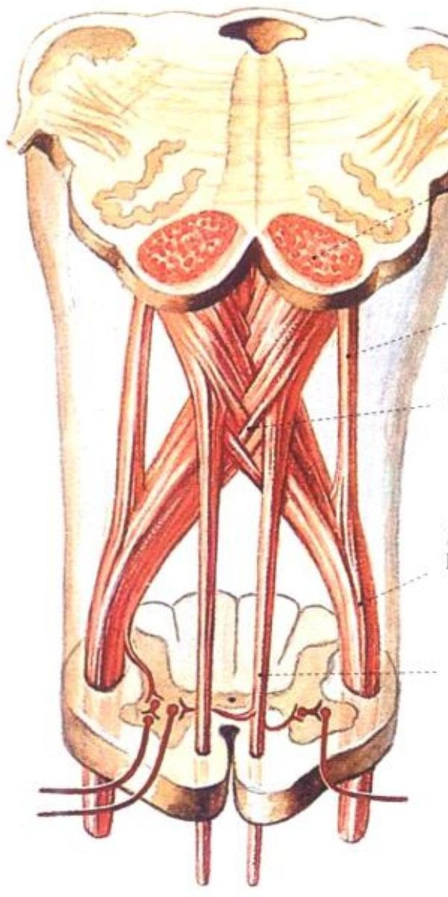
| 鉴别点 | 上运动神经元瘫（UMN） | 下运动神经元瘫（LMN） |
|---|---|---|
| 瘫痪分布 | 肌群性（偏瘫/截瘫/单瘫） | 个别肌肉 |
| 肌张力 | ↑ 增高（痉挛性/折刀样） | ↓ 降低（弛缓性） |
| 腱反射 | ↑ 亢进 | ↓ 减弱或消失 |
| 病理征 | Babinski征（+） | （−） |
| 肌萎缩 | 无/晚期轻度（废用性） | 早期明显（失神经支配） |
| 肌束颤动 | 无 | 可出现（前角细胞受刺激） |
| 病变位置 | 皮层/内囊/脊髓侧索 | 前角/神经根/周围神经 |
传入通路：视网膜节细胞→视神经→视交叉→视束→中脑顶盖前区→双侧E-W核。传出通路：E-W核→动眼神经副交感纤维→睫状神经节→瞳孔括约肌。
临床推导：右眼直接对光反射消失+间接对光反射存在=右侧传入通路（视神经）病变，传出通路正常。右眼直接+间接均消失=右侧传出（动眼神经）病变。
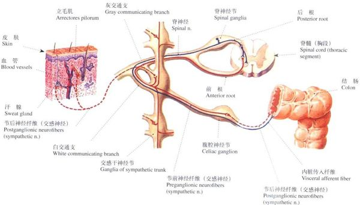
| 特征 | 交感神经 | 副交感神经 |
|---|---|---|
| 中枢部位 | T1–L2侧角（胸腰段） | 脑干（Ⅲ/Ⅶ/Ⅸ/Ⅹ核）+ S2–S4侧角（颅骶段） |
| 节前纤维 | 短（神经节紧邻脊柱） | 长（神经节靠近/在靶器官壁内） |
| 节后纤维 | 长（神经节→靶器官） | 短（终节→靶器官极近） |
| 神经节位置 | 椎旁节（交感链）+椎前节 | 终节（位于靶器官壁内或紧邻） |
| 节前递质 | ACh（乙酰胆碱） | ACh |
| 节后递质 | NE（去甲肾上腺素，汗腺例外用ACh） | ACh |
| 功能概括 | 战斗或逃跑（fight or flight） | 休息与消化（rest and digest） |
答案很简单：神经节的位置决定了纤维的长短。交感神经节紧贴脊柱（「调度站靠近大本营」）→节前短，节后长（从调度站到各器官要长途跋涉）。副交感神经节位于靶器官壁内（「调度站就在工厂门口」）→节前长（从脑干/骶髓要跑很远才能到工厂门口的调度站），节后短（进厂就是）。
核心三联征：瞳孔缩小（miosis）+上睑下垂（ptosis，Müller肌瘫痪）+同侧无汗（anhidrosis）。可选第四征：眼球内陷。
| 级别 | 病变位置 | 常见病因 | 无汗分布 | 记忆 |
|---|---|---|---|---|
| 一级（中枢性） | 下丘脑→T1侧角 | 脑干卒中、脊髓空洞症 | 同侧半身 | 范围最大=病变最高 |
| 二级（节前性） | T1侧角→颈上神经节 | Pancoast瘤（肺尖）、颈胸外伤 | 同侧面部 | 经典考题：肺尖肿瘤→Horner |
| 三级（节后性） | 颈上神经节→效应器 | 颈内动脉夹层、海绵窦病变 | 无/仅前额 | 颈动脉夹层的红旗征 |
把交感通路想象成水管：【水源（下丘脑）→总阀门（T1侧角）→水泵站（颈上神经节）→各家各户（瞳孔/Müller肌/汗腺）】。
水源或总阀坏了（一级）=整个系统无水→半身无汗；阀门到水泵站之间爆了（二级）=水泵站之后还有备用系统但不完美→面部无汗；水泵站到各户的支管爆了（三级）=只有个别户停水→无汗不明显。
临床实用记忆：Pancoast瘤顶破T1=二级Horner（面部无汗）；颈内动脉夹层=三级Horner（无汗不明显+瞳孔小+上睑下垂）。
| 类型 | 病变部位 | 膀胱表现 | 常见病因 |
|---|---|---|---|
| UMN型（痉挛性） | 骶髓以上（脑/脊髓） | 膀胱过度活动→尿频尿急+反射性排尿 | 脑卒中、脊髓损伤（骶髓以上）、MS |
| LMN型（弛缓性） | 骶髓S2–S4或马尾 | 膀胱无力→尿潴留+充溢性尿失禁 | 马尾综合征、骶髓损伤、糖尿病神经病变 |
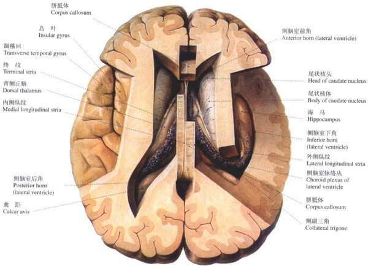
基底节是埋藏在大脑白质深部的一组灰质核团，不直接发出下行运动纤维，而是通过调控丘脑-皮层回路来「批准」或「否决」运动程序。五个核心核团：
| 核团 | 位置 | 功能角色 | 病变结果 |
|---|---|---|---|
| 尾状核 | 侧脑室前角外侧壁（C形） | 认知运动整合 | 亨廷顿病（尾状核萎缩→舞蹈症+认知↓） |
| 壳核 | 豆状核外侧部 | 运动执行的门控（输入站） | 肌张力障碍、帕金森 |
| 苍白球 | 豆状核内侧部（GPe外侧+GPi内侧） | 基底节主要输出站（GPi） | GPi DBS改善帕金森和肌张力障碍 |
| 底丘脑核（STN） | 丘脑腹侧、黑质上方 | 间接通路的关键兴奋性中继 | 偏身投掷（对侧猛烈投掷样运动） |
| 黑质 | 中脑（致密部SNc+网状部SNr） | SNc→DA→调控D1/D2；SNr=第二输出站 | SNc DA神经元死亡=帕金森病 |
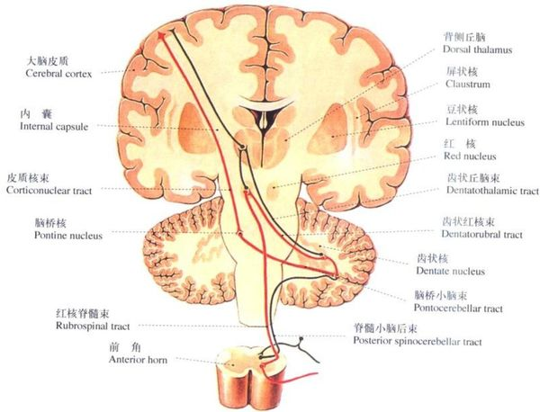
| 直接通路（GO / 油门） | 间接通路（NO-GO / 刹车） | |
|---|---|---|
| 流程 | 皮层→纹状体(D1)→GPi/SNr→丘脑→皮层 | 皮层→纹状体(D2)→GPe→STN→GPi→丘脑→皮层 |
| 净效应 | 去抑制丘脑→易化运动 | 抑制丘脑→抑制运动 |
| DA作用 | D1受体→兴奋直接通路 | D2受体→抑制间接通路 |
| DA总效果 | 多巴胺=踩油门+松刹车=促进运动。DA↓→直接↓+间接↑→运动减少（帕金森） | |
| 疾病 | 病变核团 | 核心症状 | 机制 |
|---|---|---|---|
| 帕金森病 | 黑质致密部（SNc） | 静止震颤+强直+运动迟缓 | DA↓→间接通路过度活跃→GPi过度抑制丘脑 |
| 亨廷顿病 | 尾状核+壳核（GABA↓） | 舞蹈症+人格改变+痴呆 | 间接通路先受损→GPi去抑制→丘脑过度活跃→运动过多 |
| 偏身投掷 | 对侧底丘脑核（STN） | 单侧猛烈投掷样运动 | STN→GPi兴奋消失→GPi不能抑制丘脑→运动爆发 |
| 肌张力障碍 | 壳核+苍白球 | 持续收缩→异常姿势 | 基底节输出异常→皮层过度兴奋→拮抗肌共收缩 |
DA↓=帕金森（运动过少） | GABA↓=亨廷顿（运动过多） | STN坏=偏身投掷 | 锥体外系=纹状体-苍白球系
上行网状激活系统（ARAS）是维持意识清醒的核心结构。不是单一核团，而是自脑干向上投射的多突触、多递质网络。ARAS或双侧皮层投射中断=昏迷。
| 通路 | 起自 | 中继 | 投射 | 递质 | 功能 |
|---|---|---|---|---|---|
| 背侧通路 | 脑桥被盖+中脑 | 丘脑板内核+中线核 | 广泛皮层 | ACh/DA | 皮层觉醒+丘脑中继门控 |
| 腹侧通路 | 脑桥→下丘脑→基底前脑 | 下丘脑+Meynert核 | 广泛皮层（直接） | HA/NA/5-HT/ACh | 皮层直接激活+睡眠-觉醒周期 |
六大递质系统：①ACh（脑桥被盖+基底前脑→皮层觉醒）②NA（蓝斑→广泛皮层）③DA（VTA→前脑）④5-HT（中缝核→皮层）⑤HA（结节乳头体核→觉醒周期）⑥Orexin（下丘脑外侧→稳定觉醒）。
| 类型 | 病变位置 | 机制 | 经典病因 | 体征线索 |
|---|---|---|---|---|
| 幕上结构性 | 一侧占位→中央疝 | 间脑→中脑→脑桥受压，ARAS破坏 | 硬膜外/下血肿、MCA大面积梗死 | 对侧偏瘫+同侧瞳孔变化（钩回疝→Ⅲ受压→瞳孔散大）；晚期去大脑强直 |
| 幕下结构性 | 脑干（中脑/脑桥上部） | ARAS起点被直接破坏 | 基底动脉闭塞、脑桥出血 | 突发昏迷+针尖样瞳孔（脑桥出血）+呼吸异常 |
| 弥漫性/代谢性 | 双侧皮层+皮层下 | 广泛神经元功能障碍 | 低血糖、肝性脑病、缺氧后脑病 | 无局灶体征、瞳孔光反射常保留、扑翼样震颤/肌阵挛 |
| 状态 | 睁眼 | 意识 | 运动 | 病变部位 |
|---|---|---|---|---|
| 昏迷 | 无 | 无 | 仅有反射 | 双侧ARAS或双侧皮层受损 |
| 闭锁综合征 | 有 | 完全清醒 | 四肢瘫，仅垂直眼动保留 | 脑桥腹侧（基底动脉闭塞→皮质脊髓束+皮质核束，ARAS在背侧保留） |
| 植物状态 | 有（睡眠-觉醒周期） | 无觉知 | 仅有反射/无目的 | 双侧皮层广泛坏死（ARAS完整→睁眼；无皮层→无觉知） |
| 最小意识状态 | 有 | 间断但可重复的觉知 | 可执行简单指令（追视/取物） | 皮层损伤不完全→残余皮层岛功能 |
把意识想象成房间里的光：ARAS=电源开关（脑干→丘脑→皮层），大脑皮层=灯泡（产生意识内容）。
昏迷=开关坏了（ARAS破坏）→灯不亮。
植物状态=开关正常（有睡眠-觉醒周期），但灯泡全碎（双侧皮层坏死）→通电也不亮。
闭锁综合征=开关+灯泡全好（完全清醒），但断路器（脑桥腹侧运动通路）断了→灯亮但信号传不出去，只能靠垂直眼动交流。
幕上占位→脑组织经小脑幕切迹向下挤压→意识障碍遵循「间脑→中脑→脑桥→延髓」：
间脑期：嗜睡，Cheyne-Stokes呼吸，瞳孔小但光反射存在。
中脑期：昏迷，去大脑强直，瞳孔固定于中位（E-W核），过度换气。
脑桥期：深昏迷，长吸式呼吸，头眼反射消失。
延髓期：弛缓性瘫+瞳孔散大固定+呼吸不整→死亡。
钩回疝特殊：颞叶钩回疝入小脑幕切迹→直接压迫同侧Ⅲ+大脑脚→同侧瞳孔散大（Ⅲ受压）+对侧偏瘫（大脑脚·皮质脊髓束）。是幕上占位的最早红旗征。
| 标准术语 | 同义异名 | English |
|---|---|---|
| 前庭蜗神经 | 位听神经 | Vestibulocochlear nerve (CN VIII) |
| Wallenberg综合征 | 延髓背外侧综合征 | Lateral medullary syndrome |
| Dejerine-Roussy综合征 | 丘脑综合征 | Thalamic pain syndrome |
| Brown-Séquard综合征 | 脊髓半切综合征 | Spinal hemisection syndrome |
| Horner综合征 | 颈交感神经麻痹综合征 | Horner syndrome |
| Weber综合征 | 中脑腹侧综合征 | Weber syndrome (midbrain) |
| Millard-Gubler综合征 | 脑桥基底外侧综合征 | Millard-Gubler syndrome |
| Gerstmann综合征 | 角回综合征 | Gerstmann syndrome |
| GBS | 吉兰-巴雷综合征/急性炎性脱髓鞘性多神经病 | Guillain-Barré syndrome |
| ALS | 肌萎缩侧索硬化/渐冻症 | Amyotrophic lateral sclerosis |
| MS | 多发性硬化 | Multiple sclerosis |
| AD | 阿尔茨海默病/老年性痴呆 | Alzheimer disease |
| PD | 帕金森病/震颤麻痹 | Parkinson disease |
| Broca区 | 运动性语言中枢（BA44/45） | Broca area |
| Wernicke区 | 感觉性语言中枢（BA22） | Wernicke area |
| E-W核 | Edinger-Westphal核/动眼神经副核 | Edinger-Westphal nucleus |
| 内侧丘系 | 延髓丘脑束 | Medial lemniscus |
| 脊髓丘脑束 | 脊髓丘系/前外侧系统 | Spinothalamic tract |
| 皮质脊髓束 | 锥体束 | Corticospinal (pyramidal) tract |
| 皮质核束 | 皮质脑干束 | Corticonuclear (corticobulbar) tract |
| 后索 | 背柱（薄束+楔束） | Dorsal column (fasciculus gracilis + cuneatus) |
| 白质前连合 | 前白质连合 | Anterior white commissure |
| 内囊 | 内囊（内囊前肢+膝+后肢） | Internal capsule |
| Willis环 | 大脑动脉环 | Circle of Willis |
| 蛛网膜粒 | Pacchioni颗粒 | Arachnoid granulations |
| 前角细胞 | 下运动神经元（脊髓） | Anterior horn cell (LMN) |
| 小脑后下动脉 | PICA | Posterior inferior cerebellar artery |
| 大脑中动脉 | MCA/Sylvian动脉 | Middle cerebral artery |
| 颞横回 | Heschl回（BA41/42） | Transverse temporal gyrus (of Heschl) |
| 距状裂 | 距状沟（BA17周围） | Calcarine fissure/sulcus |
| 展神经 | 外展神经（CN VI） | Abducens nerve |
| 终丝 | 终丝（脊髓末端纤维索） | Filum terminale |
| 马尾 | 马尾神经 | Cauda equina |
| 知识点 | 教材页码 | 对应图谱 |
|---|---|---|
| 脊髓节段-椎体对应 | 教材P29 | 图211–222 |
| 脊髓灰质Rexed分层 | 教材P30 | 图221–222 |
| 脑干腹面观+背面观 | 教材P32 | 图223–224 |
| 延髓横切面（4个断面） | 教材P33 | 图227–230 |
| 脑桥+中脑横切面 | 教材P35 | 图231–234 |
| 小脑分叶+小脑脚 | 教材P38 | 图244–247 |
| Brodmann分区+大脑皮层 | 教材P40 | 图248–251 |
| 内囊解剖+基底节 | 教材P43 | 图260–263 |
| Willis环+脑动脉分布 | 教材P45 | 图264–267 |
| 脑膜三层结构 | 教材P50 | 图277–278 |
| 脑脊液循环 | 教材P51 | 图279 |
| 12对脑神经总览 | 教材P52 | 图280–289 |
| 感觉传导路（脊髓丘脑束+内侧丘系） | 教材P60 | 图291 |
| 视觉传导路 | 教材P62 | 图292 |
| 锥体束走行 | 教材P65 | 图297–298 |
| 自主神经（交感+副交感） | 教材P70 | 图304–307 |